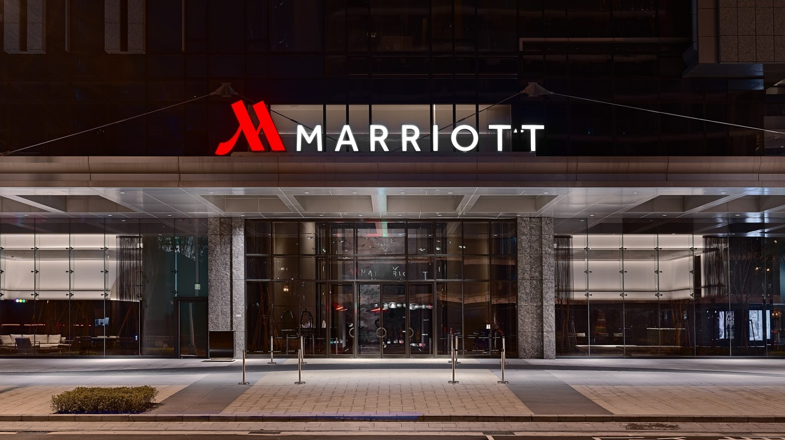
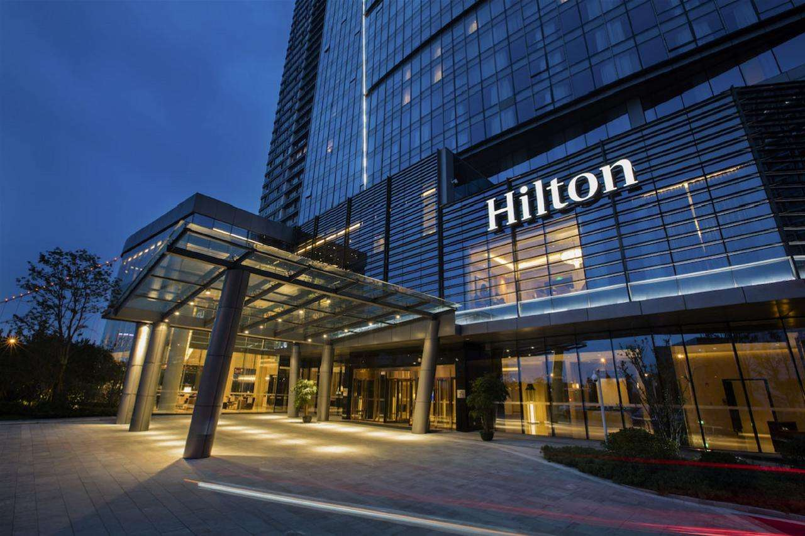

汕头住宿与交通指南
住宿推荐

万豪酒店
酒店简介：这是一家位于市中心的海滨豪华酒店，拥有舒适的客房和完善的设施，周边交通便利，购物、餐饮场所众多。
价格范围：[900] - [1500] 元/晚
地址：[汕头市龙湖区珠港新城]
查看详情

交通指南
飞机
汕头外砂机场已停止民航业务，目前前往汕头可选择乘坐飞机到揭阳潮汕国际机场。机场距离汕头市区约 30 公里，可通过以下方式前往市区：
- 机场大巴：有多条线路往返于机场和汕头市区，票价实惠，方便快捷。
- 出租车：在机场出租车候车区排队搭乘，费用根据路程计算。
- 网约车：通过手机打车软件叫车，出行更灵活。
火车
汕头有汕头站等火车站，可乘坐火车高铁到达汕头。火车站周边交通便利，可通过公交车、出租车等方式前往市区各个地方。
市内交通
汕头的市内交通较为发达，主要的交通方式有：
- 公交车：线路覆盖广泛，票价便宜，是出行的常见选择。
- 出租车/网约车：出行方便，可随时叫车，但在高峰期可能会遇到堵车情况。
- 共享单车：适合短距离出行，环保又便捷。